Kjøp brukte tekstiler istedenfor å kjøpe nye. Dette kan redusere behovet for å produsere nye tekstiler og dermed redusere avfallsmengden.
Kjøp mer naturlige materialer. Naturlige materialer er biologisk nedbrytbare og kan derfor brytes ned i naturen uten å forurense.
Ved å kjøpe brukt kan du redusere behovet for å produsere nytt, ved å gjøre dette kan du også redusere avfallsmengden.
Velg å kjøpe fra merker som har et bærekraftig fokus i produksjonen sin. Dette kan hjelpe med å redusere klimautslipp.
Gi bort klær du ikke bruker til organisajoner som Fretex, eller resirkuler dem.
